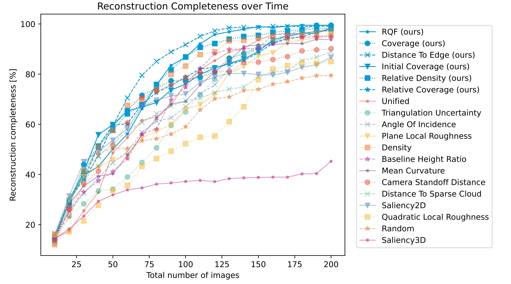
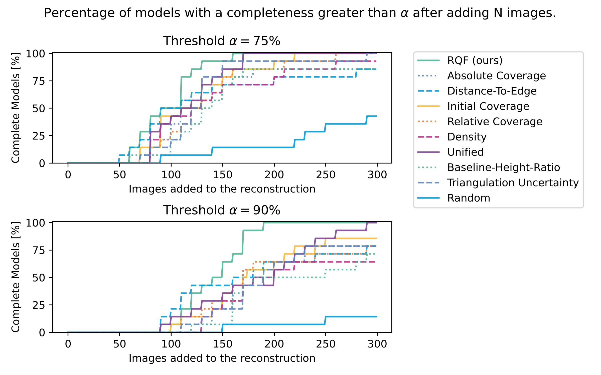

Reconstruction Quality Feedback (RQF)

Visualization of the different components that in total make up the RQF metric. The value of each point is visualized using a blue-green-yellow-red gradient, with high values displayed in red.
Iterative Reconstructions of a Single Object

Overview of the reconstruction completeness over simulated feedback loops when using different metrics as feedback method for view planning. The metrics proposed in this article are highlighted in blue and show a comparable if not significantly better effectiveness compared to existing metrics.
Iterative Reconstructions of the Full Dataset

Fraction of simulations that resulted in a completeness of over 75% (90% respectively) when using a specific metric as feedback mechanism for iterative view planning.
BibTeX
@article{Neumann2025,
author={Neumann, Kai A. and Tausch, Reimar and Kutlu, Hasan
and Kuijper, Arjan and Santos, Pedro and Fellner, Dieter},
title={Point cloud quality metrics for incremental image-based 3D reconstruction},
journal={Multimedia Tools and Applications},
year={2025},
month={Jan},
day={08},
issn={1573-7721},
doi={10.1007/s11042-025-20596-6},
url={https://doi.org/10.1007/s11042-025-20596-6}
}